Shtamp — a review console that checks before it decides
- Role
- UI/UX & Product Designer
- Platform
- Web, desktop
- Domain
- FinTechCompliance
- Team
- Solo concept
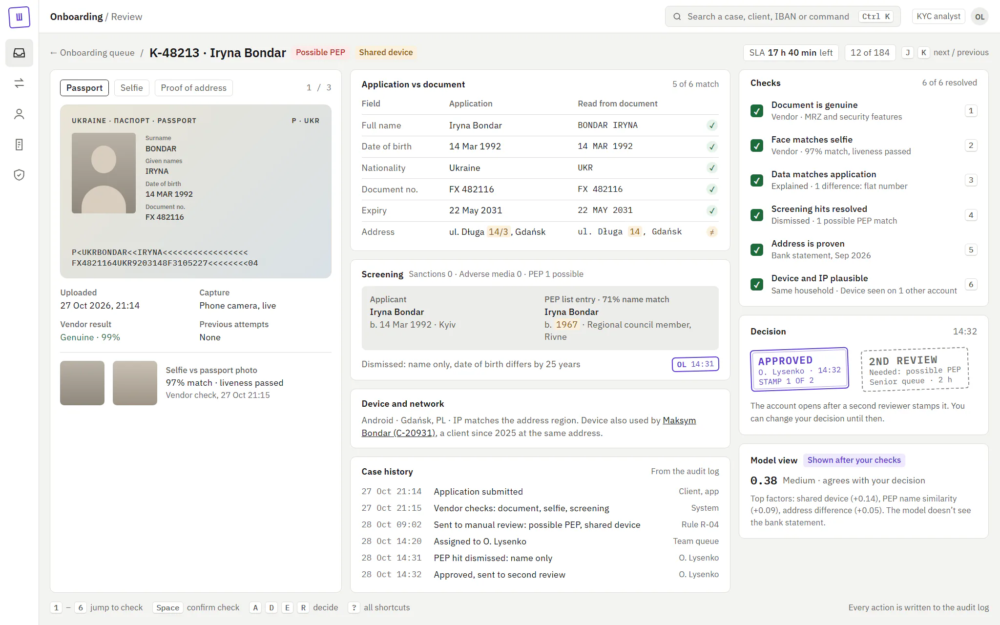
- Problem
- KYC analysts at a payments app compared evidence across six tabs and wrote free-text notes. A review took 6:40, and 4.1% of decisions were wrong.
- What I did
- Ran task analysis with expert analysts and an audit log review, and redesigned review, alerts, the client card, bulk actions and the audit trail. Then I measured with a benchmark and a staged rollout instead of an A/B test.
- Result
- Reviews took 5:25 instead of 6:40, and wrong decisions fell to 3.4%. Newcomers gained most. The AI risk score failed: it made reviews faster and misses more frequent.
Shtamp is the in-house review console at Dzvin, an e-money app for Ukrainians living in the EU. I redesigned it for the people who approve, reject and freeze accounts.
Concept. Product, users and data are fictional.
Context
Dzvin has 410,000 customers and 1,850 new applications a day. The ID vendor approves 62% automatically; the other 703 reach a person. Twenty-four KYC analysts, nine support agents and six compliance officers work in Shtamp, alongside two team leads. On Mondays 31% of applications missed the 24-hour SLA.
The Head of Operations’ brief: “Make reviews faster, but I won’t sign anything that raises our error rate. The regulator reads our audit trail.”
This is a solo concept, written the way it would run in a team: an operations lead, a compliance officer, three front-end engineers and me. I ran the research, the design and the measurement plan. Seven weeks of design, six weeks of rollout.
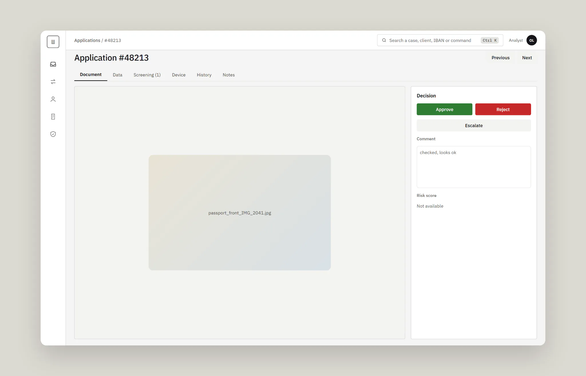
Constraints
- The regulator reads the audit log alone. Every decision must explain itself there, without opening the case.
- Irreversible actions need a reason code. Freeze, offboarding and suspicious activity reports can’t be undone in a click.
- The ID vendor’s data model stays as it is this quarter. I could rearrange its checks, not add new ones.
- No A/B test on staff. Twenty-four people on one live queue can’t work under two standards.
Process
Analysts review fast and can’t say how. So I didn’t ask what they do; I asked them to walk me back through a hard case. Critical-decision interviews with 8 analysts, 3 support agents and 3 compliance officers, 22 hours in all, mapped 34 tasks. A review of 90 days of the audit log, 1.2 million events, showed what people don’t notice themselves:
- 23% of reviews opened four or more tabs. Analysts compared the passport and the data by memory.
- 14% of document requests went out twice, and 18% of escalations bounced back. A note like “checked, looks ok” told the next person nothing.
- Bulk actions treated a freeze like a tag. In July a lead unfroze 37 accounts in one click after a rule misfired. Three belonged to a fraud ring the rule had caught correctly.
“I flip between the passport and the data tab like a spot-the-difference puzzle. At 4 pm I stop trusting my eyes.”
Olena, KYC analyst
The numbers split the team in two. Newcomers, under three months, took 9:10 a case; experienced analysts took 5:20 and feared any extra click. I ranked five hypotheses by ICE. An AI risk score shown up front came second, only because it was cheap. Its confidence was the lowest, so it went to shadow mode before anyone saw it.
Before and after, I ran a benchmark: 16 analysts, 8 newcomers and 8 experienced, on 40 golden cases with known answers, 12 of them suspicious. A first-click test with 20 people covered six risky actions, and SUS covered the whole tool.
Key decisions
Where does the evidence go?
Options: keep the tabs; put everything side by side; side by side plus a checklist. I chose the checklist: six checks with a key each, and Approve unlocks only when all six are resolved. The cost: experienced analysts lose a few seconds a case, so checks the vendor already passed arrive ticked.
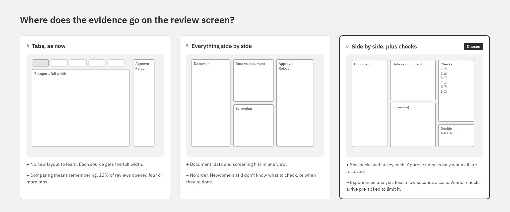
How much can one click change?
Options: bulk for everything, no bulk, or bulk only for reversible actions. I chose the third. Assign, tag and request documents work in bulk; approve, reject and freeze go one case at a time. The cost: leads lose speed when a rule misfires, so they get a rule rollback with a preview and a second approver.
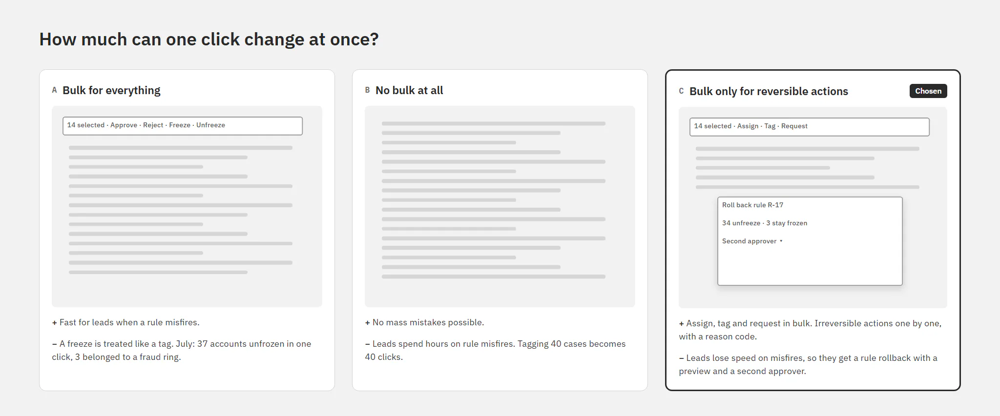
What does the client card answer first?
Options: profile first, a different order per role, or risk first. I chose risk first, with name, status and phone pinned on top. The cost: support needs one extra click for the full profile.
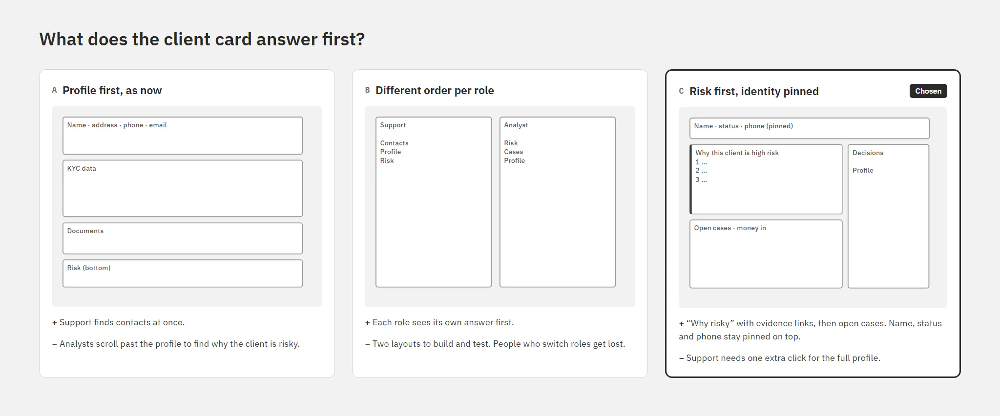
Evidence on one screen, checks before the verdict
The document, the application compared field by field, screening hits and device signals sit side by side. Differences are highlighted where they are, so the flat number missing on a bank statement shows in both columns. A possible PEP match puts both people next to each other, with the date of birth that tells them apart.
Each check closes with one key, and each answer becomes a reason code. The next person sees what was checked and why.
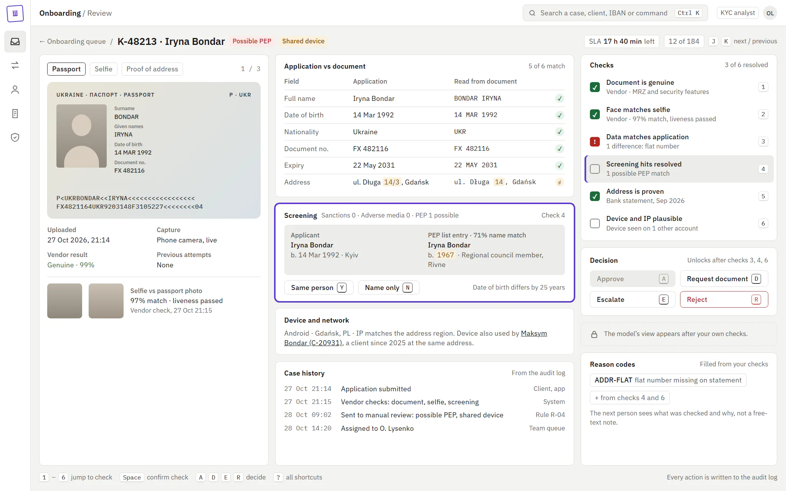
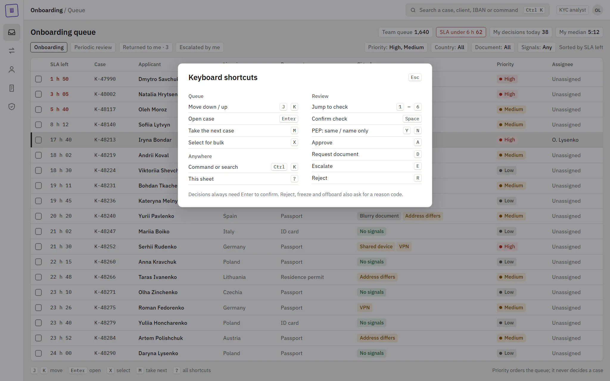
The same idea works on transaction alerts: the reason for a flag sits in its row, not in a tab.
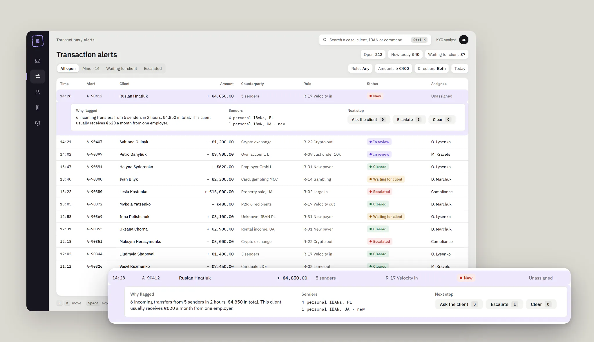
The stamp: a decision you can read later
The product’s one memorable element is a stamp in violet ink, the colour of an official seal. It holds the decision, initials, time and reason codes. A high-risk approval needs two stamps from two people; until the second arrives, the first says “stamp 1 of 2”, so nobody reads it as done. Everything else stays quiet: warm greys, IBM Plex Sans, and Plex Mono for IDs, amounts and times.
The client card opens on why the person is risky, with links to the evidence, and keeps every past decision as a stamp.
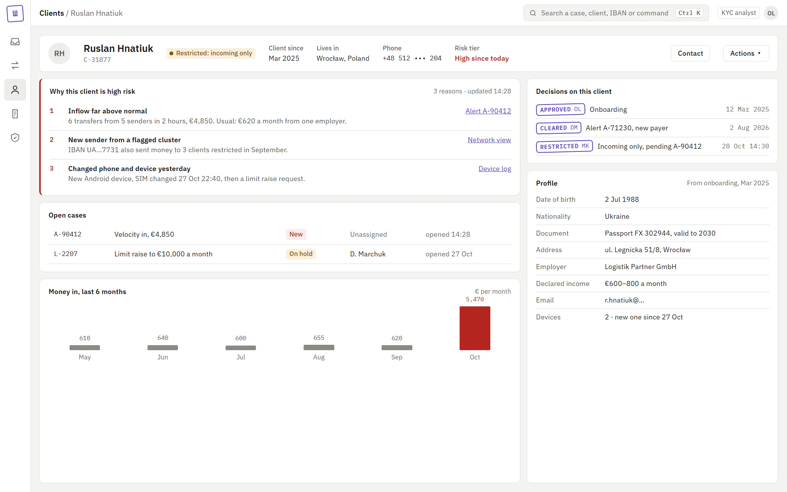
Bulk without mass mistakes
Bulk tools appear only for actions you can undo. For a misfired rule, a lead rolls it back with a preview: 34 accounts unfreeze, 3 with other signals stay frozen, and a compliance officer stamps it second.
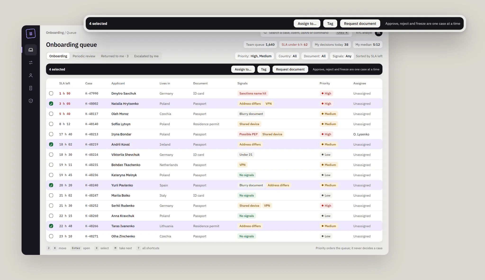
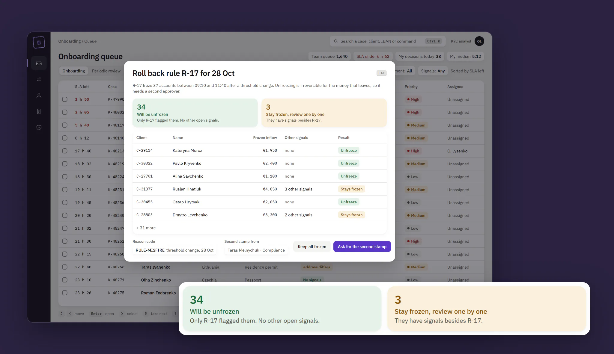
An audit trail the regulator can read
Each event shows who, what changed, the reason codes and the source: UI, bulk or rule. The selected event shows both stamps and what the model said at decision time. Permissions are a table for leads, but people never see it. They see a disabled button that says who can do the action.
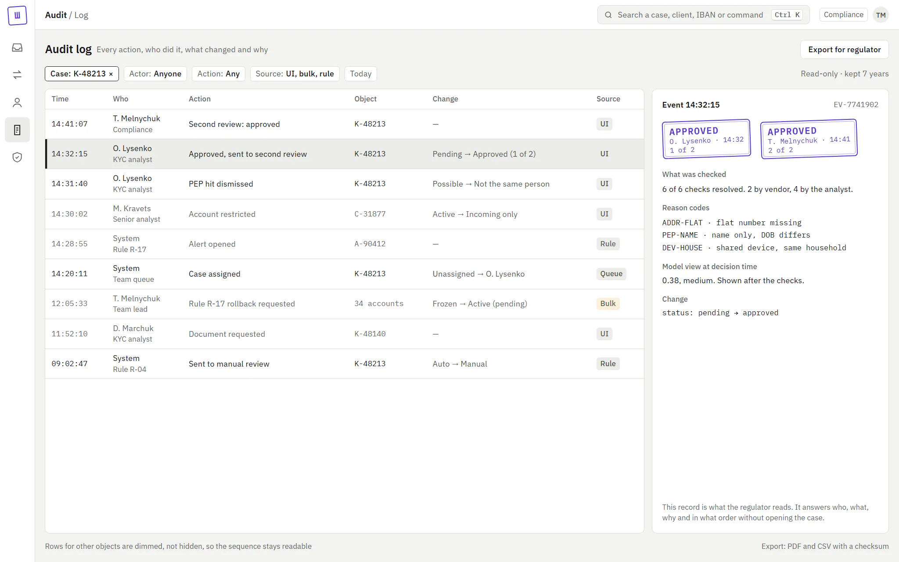
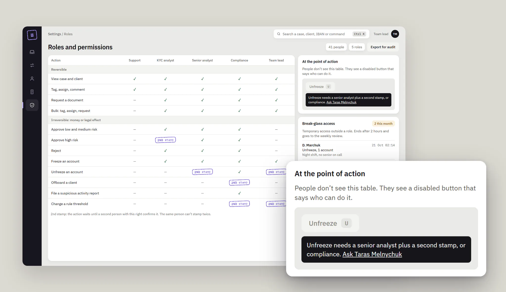
Night shifts work in dark mode, built from the same tokens. Every text pair passes WCAG AA in both themes, checked by a script.
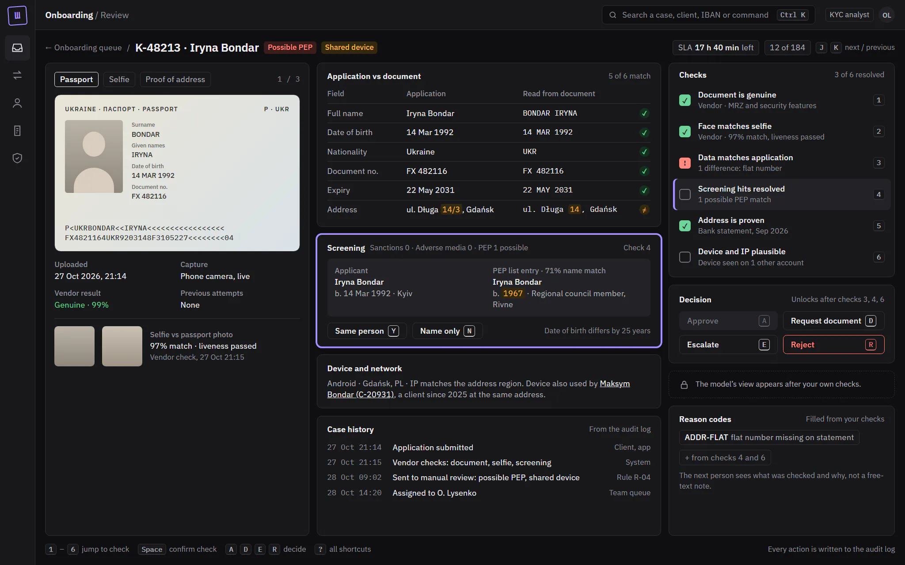
Result
The hypothesis that failed. The AI score went to the benchmark group first, shown up front with a suggested decision. Reviews got 23% faster, and analysts agreed with the score in 93% of cases. But on seeded suspicious cases, misses rose from 6% to 15%, over the stop rule. People checked less when the machine had already answered. Automation bias, measured.
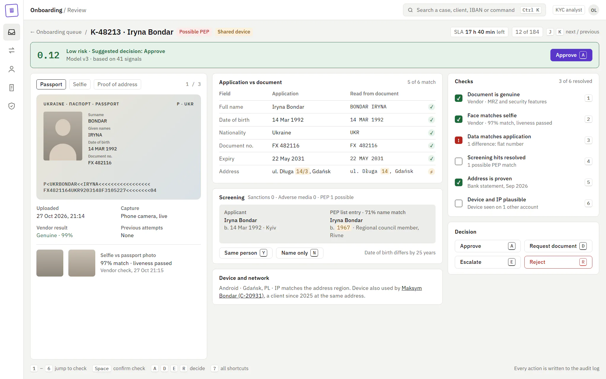
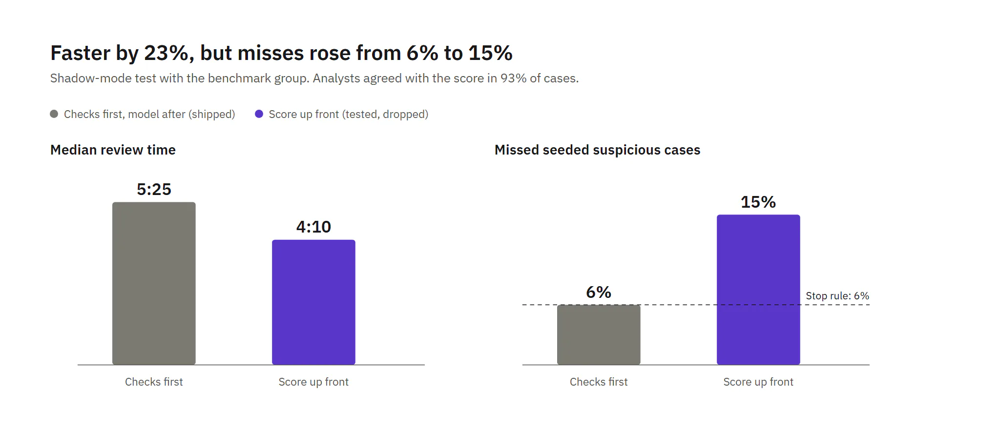
The score moved behind the checks: the model’s view appears only after the analyst’s own decision, and says what it can’t see. AI kept one job, ordering the queue. Most of its speed-up was lost, on purpose.
The redesign rolled out queue by queue over six weeks. Small sample, so I read direction, not significance.
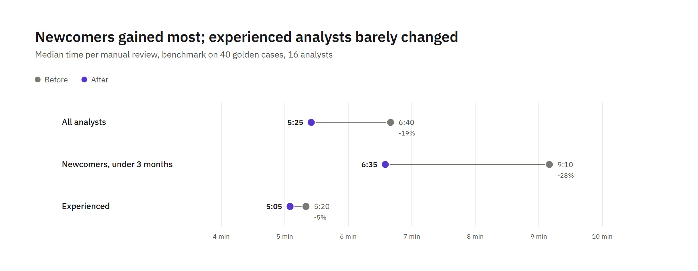
- Review time fell from 6:40 to 5:25. Newcomers went from 9:10 to 6:35; experienced analysts from 5:20 to 5:05.
- Wrong decisions in the blind QA sample fell from 4.1% to 3.4%. Bounced escalations fell from 18% to 12%.
- First-click success on risky actions rose from 58% to 86%; SUS from 54 to 69.
- Guardrail. Escalations to compliance rose from 9% to 12%. Newcomers who now see every signal escalate more. Escalation now needs a reason code, and leads review the codes weekly.
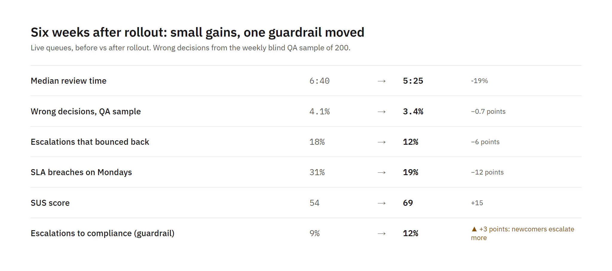
What I learned
- Speed is the wrong north star for a risk tool. The fastest version I tested was the most dangerous one.
- Order of information is a safety feature. The same model became useful once it spoke last.
- Measure misses, not only time. Without seeded cases, the AI score would have looked like a win.